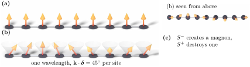
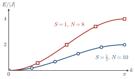

Advanced Quantum Materials 2027 · All lectures · Lecture notes
Session 6. Classical Magnetism and Magnons
6.13 Magnons as fluctuations of the order parameter
What are the low-lying excitations of an ordered ferromagnet, and how do we compute them? We will now see that the spins can be written as bosons with no approximation, (6.6). Close to the ordered state the spin Hamiltonian then becomes a bosonic tight-binding Hamiltonian, where the magnon hops between neighbors with the amplitude \(-|J|S\).
\[H_\text{Heis} = \sum_{\langle ij\rangle} J_{ij}\, \mathbf S_i\cdot\mathbf S_j, \qquad J_{ij} = \frac{4t_{ij}^2}{U}. \tag{6.5}\]
This is the Heisenberg model of Section 6.9, with each bond \(\langle ij\rangle\) counted once and the spin operators \(\mathbf S_i\) of size \(S\). For \(U\) much larger than \(t_{ij}\) and one electron per site, the direct hop \(t_{ij}\) between two sites gives \(J_{ij}=4t_{ij}^2/U>0\), which is antiferromagnetic. On this page we take one coupling \(J<0\) on all the first-neighbor bonds, which is a ferromagnet, and Section 6.11 shows where such a coupling comes from.
Until now we have only asked about ground states. Let us now ask about excitations. We take the Heisenberg model (6.5) with \(J<0\), which is ferromagnetic, and we promote the spins to real quantum operators that satisfy the angular-momentum algebra \([S_i^a,S_j^b] = i\hbar\,\delta_{ij}\epsilon^{abc}S_i^c\). From here on we set \(\hbar=1\), which is the standard choice for this kind of calculation, and we ask for the low-lying excited states.
In contrast with the interacting electron problem, the exact ground state of the ferromagnetic Heisenberg model is known immediately. It is the fully polarized state with all spins aligned, since for \(J<0\) no other configuration can make \(\langle \mathbf S_i\cdot\mathbf S_j\rangle\) larger than \(S^2\), its value in this state, on any bond. A magnon is a small fluctuation of the magnetization that propagates on top of this fully polarized state. Qualitatively, it is a single spin tilted slightly out of alignment, delocalized coherently over the whole lattice as a wave. The question is how to obtain these excitations systematically from a many-body spin Hamiltonian. The answer is a change of variables that turns the spin problem into a bosonic tight-binding problem.
6.14 The Holstein-Primakoff transformation
There is an exact mapping between spin operators and bosonic creation and annihilation operators \(a_i^\dagger, a_i\) with \([a_i,a_j^\dagger]=\delta_{ij}\), which is called the Holstein-Primakoff transformation. For a spin of magnitude \(S\) on site \(i\), it reads
\[S_i^z = S - a_i^\dagger a_i, \qquad S_i^+ = \sqrt{2S-a_i^\dagger a_i}\;a_i, \qquad S_i^- = a_i^\dagger\sqrt{2S-a_i^\dagger a_i}. \tag{6.6}\]
This is an exact rewriting. If we insert (6.6) and use the bosonic commutation relations, we obtain exactly the full \(SU(2)\) spin algebra \([S_i^z,S_i^\pm]=\pm S_i^\pm\), \([S_i^+,S_i^-]=2S_i^z\), without any approximation so far. The physical picture is direct. The operator \(a_i^\dagger a_i\) counts how many units of spin have been removed from the fully polarized value \(S\) on site \(i\). This means that it counts the magnons on that site, which is what \(S_i^z=S-a_i^\dagger a_i\) states. The square-root operators are what make (6.6) exact even far from full polarization. They are also the reason why the Hamiltonian, written in this form, looks more complicated and not simpler.
The simplification comes from linearizing. When the expectation value of \(a_i^\dagger a_i\) stays much smaller than \(S\), which means when we stay close to the fully polarized ground state, we can expand the square roots and keep only the leading term. This is the regime that we want, since we are looking for low-lying excitations above this ground state.
Close to full polarization, when \(\langle a_i^\dagger a_i\rangle\ll S\), the square roots of (6.6) become \(\sqrt{2S}\), and the spins are linear in the bosons,
\[S_i^+ \approx \sqrt{2S}\, a_i, \qquad S_i^- \approx \sqrt{2S}\, a_i^\dagger, \qquad S_i^z = S - a_i^\dagger a_i. \tag{6.7}\]
The operator \(S_i^-\) creates a magnon on site \(i\) and \(S_i^+\) removes one, so the total magnetization is \(\sum_i S_i^z=NS-\sum_i a_i^\dagger a_i\), one unit of spin less for every magnon.
This linearized form is the one that is used in practice to compute magnon spectra. The counting that follows from it is the easiest way to remember the whole transformation, so we write it out. The operator \(S^+\) raises \(S^z\), meaning that it increases the local magnetization back toward saturation, and it destroys a magnon. The operator \(S^-\) lowers the magnetization, and it creates a magnon.
The total magnetization of the system is the fully saturated value minus the total number of magnons, \(\sum_i \langle S_i^z\rangle = NS - \sum_i\langle a_i^\dagger a_i\rangle\). Each magnon has one unit of spin, so magnons are \(S=1\) excitations, in agreement with what we said about them in Section 6.1. They exist only because the ground state on which they live has already broken spin-rotation symmetry spontaneously. Figure 6.5 shows the three parts, which are the fully polarized ground state, the delocalized precession wave that carries a single magnon, and this rule for raising and lowering.

We create one magnon on top of the saturated ferromagnet. Which operator does it, and how does the total \(S^z\) change?
Show the answers
- A. ✓ True
This is true. The boson number counts the spin removed from saturation, so \(\sum_i\langle S_i^z\rangle=NS-\sum_i\langle a_i^\dagger a_i\rangle\). The lowering operator \(S^-\) creates a boson and reduces \(S^z\) by one.
- B. ✗ False
This is false. On the saturated state with all spins up, \(S^+_i|\uparrow\rangle=0\). Nothing is created, because \(S^z=S\) is already the maximum.
- C. ✗ False
This is false. Take two spin-\(1/2\) sites. The state \(|\uparrow\uparrow\rangle\) has \(S^z=1\), and \(S_1^-\) gives \(|\downarrow\uparrow\rangle\) with \(S^z=0\), so the total changes by one.
The Holstein-Primakoff bosons count the spin removed from saturation,
\[S_i^z = S - a_i^\dagger a_i.\]
We take a spin \(S=1\). Close to saturation, which form does \(S_i^+\) take?
Show the answers
- A. ✓ True
This is true. \(S_i^+\) raises \(S_i^z\) by one, so it removes a boson. The factor \(\sqrt{2S}\) keeps the spin algebra, since \([S_i^+,S_i^-]=2S_i^z\approx2S\) and \([a_i,a_i^\dagger]=1\).
- B. ✗ False
This is false. This operator adds a boson, so it lowers \(S_i^z\) by one, which is what \(S_i^-\) does. On the saturated state, with no boson, \(S_i^+\) gives zero, while \(a_i^\dagger\) gives a state with one boson.
- C. ✗ False
This is false. For \(S=1\) the commutator \([S_i^+,S_i^-]\) would be \(S^2[a_i,a_i^\dagger]=1\), while the spin algebra needs \(2S_i^z\approx2S=2\). The two forms agree only for \(S=2\), where \(S=\sqrt{2S}\).
We insert (6.7) into the ferromagnetic Heisenberg Hamiltonian,
\[H = J\sum_{\langle ij\rangle}\mathbf S_i\cdot\mathbf S_j = J\sum_{\langle ij\rangle}\big[S_i^zS_j^z + \tfrac12(S_i^+S_j^-+S_i^-S_j^+)\big],\]
and we keep the terms up to quadratic order in the bosonic operators,
\[S_i^zS_j^z \approx S^2 - S\big(a_i^\dagger a_i + a_j^\dagger a_j\big), \qquad \tfrac12\big(S_i^+S_j^- + S_i^-S_j^+\big) \approx S\big(a_i^\dagger a_j + a_j^\dagger a_i\big),\]
and in this way the spin Hamiltonian becomes a bosonic tight-binding Hamiltonian for magnons, and its hopping amplitude is set directly by the exchange coupling \(J\), as we said before. The magnon hops between sites with an amplitude proportional to \(JS\), in direct analogy with the electronic tight-binding Hamiltonians that we have diagonalized during the whole course.
The steps From a ferromagnetic bond to the magnon hopping
Let us take the simplest case, two spins \(S\) with one bond, \(H=J\,\mathbf S_1\cdot\mathbf S_2\) with \(J=-|J|\). With the two quadratic forms above, and without the quartic terms, we get
\[H \approx JS^2 - JS\big(a_1^\dagger a_1 + a_2^\dagger a_2\big) + JS\big(a_1^\dagger a_2 + a_2^\dagger a_1\big) = -|J|S^2 + |J|S\big(a_1^\dagger a_1 + a_2^\dagger a_2\big) - |J|S\big(a_1^\dagger a_2 + a_2^\dagger a_1\big).\]
The constant \(-|J|S^2\) is the energy of the polarized pair. The bond gives each of its two sites the onsite energy \(|J|S\), and it lets the boson hop from one site to the other with the amplitude \(-|J|S\). With one magnon the Hamiltonian is a matrix of size two,
\[H_1 = -|J|S^2 + |J|S\begin{pmatrix} 1 & -1 \\ -1 & 1\end{pmatrix},\]
with the excitation energies \(0\) for the symmetric state and \(2|J|S\) for the antisymmetric one. The exact pair gives the same, since \(J\,\mathbf S_1\cdot\mathbf S_2=\tfrac J2\big[S_\text{tot}(S_\text{tot}+1)-2S(S+1)\big]\). The one-magnon states have \(S_\text{tot}=2S\), with the energy \(-|J|S^2\) of the polarized pair, and \(S_\text{tot}=2S-1\), with \(-|J|S^2+2|J|S\). The symmetric state is the polarized pair turned as a whole, which costs no energy.
On a lattice every site belongs to \(z\) bonds. The bonds add up to the onsite energy \(z|J|S\) on each site and the hopping \(-|J|S\) to each neighbor,
\[H \approx E_0 + z|J|S\sum_i a_i^\dagger a_i - |J|S\sum_{\langle ij\rangle}\big(a_i^\dagger a_j + a_j^\dagger a_i\big),\]
with \(E_0=-|J|S^2Nz/2\) the energy of the polarized state of \(N\) spins. This is the bosonic tight-binding Hamiltonian that Section 6.15 diagonalizes with a Fourier transform.

On a ferromagnetic ring the magnon hops with \(-|J|S\) and has the onsite energy \(2|J|S\). Take \(S=1\) and \(|J|=1\). Which picture is the one-magnon band?
Show the answers
- A. ✗ False
This is false. This band reaches \(2\) at \(k=\pm\pi\), which is the ring of spins \(S=\tfrac12\). For \(S=1\) the onsite energy \(2\) and the two hops of \(-1\) give \(2-2\cos\pi=4\) at \(k=\pi\).
- B. ✓ True
This is true. A plane wave \(e^{ikj}\) on the ring has the energy \(2|J|S-2|J|S\cos k=2|J|S(1-\cos k)\). It is zero at \(k=0\), where all the spins turn together, and \(4|J|S=4\) at \(k=\pi\).
- C. ✗ False
This is false. This band reaches \(8\), which a ring of spins \(S=2\) has, since \(4|J|S=8\) for \(S=2\). For \(S=1\) the top of the band is \(4\).
A ring of \(N\) spins \(S=\tfrac12\) has \(H=J\sum_j\mathbf S_j\cdot\mathbf S_{j+1}\) with \(J<0\), and \(|\mathrm{FM}\rangle\) is the state with all the spins up. Show that the one-magnon state
\[|k\rangle=\frac{1}{\sqrt N}\sum_j e^{ikj}\,S_j^-|\mathrm{FM}\rangle, \qquad k=\frac{2\pi n}{N},\]
is an exact eigenstate of \(H\), and find its energy above the ground state.
Solution
We write \(|j\rangle=S_j^-|\mathrm{FM}\rangle\), the state with the spin \(j\) down, and the Hamiltonian as
\[H=J\sum_j\Big[S_j^zS_{j+1}^z+\tfrac12\big(S_j^+S_{j+1}^-+S_j^-S_{j+1}^+\big)\Big].\]
On \(|\mathrm{FM}\rangle\) every bond gives \(J/4\), so the ground state energy is \(E_0=NJ/4\). In \(|j\rangle\) the two bonds of the site \(j\) have antiparallel spins and give \(-J/4\) each, so the diagonal part is \(E_0-J\). The exchange term moves the down spin to a neighbor, with the matrix element \(J/2\) for spins \(\tfrac12\), so
\[H|j\rangle=(E_0-J)\,|j\rangle+\frac J2\big(|j+1\rangle+|j-1\rangle\big).\]
This is a tight-binding chain for one particle, and the plane wave diagonalizes it,
\[H|k\rangle=\big(E_0-J+J\cos k\big)|k\rangle, \qquad E(k)-E_0=|J|(1-\cos k).\]
The state is exact, since \(H\) conserves the total \(S^z\) and never takes \(|j\rangle\) out of the states with one down spin. The energy is zero at \(k=0\), where \(|k\rangle\) is the polarized state turned as a whole, and it is largest at \(k=\pi\), with \(2|J|\). This is \(2|J|S(1-\cos k)\) for \(S=\tfrac12\), the band (6.8) with \(z=2\), so the linear form (6.7) is exact for one magnon, and the diagonalization of a ring of eight spins gives the same values. Inelastic neutron scattering measures this band, so its width gives the exchange \(|J|\) of a ferromagnet.
- In Section 6.15 this bosonic tight-binding Hamiltonian gives the magnon dispersions of the ferromagnet and of the antiferromagnet.
- In Section 8.5 the triplon of a dimerized magnet has the same structure as a magnon, with only a different name.
- In Section 8.7 the Holstein-Primakoff expansion (8.8) fails for a quantum spin liquid, since there the boson density is as large as \(S\).